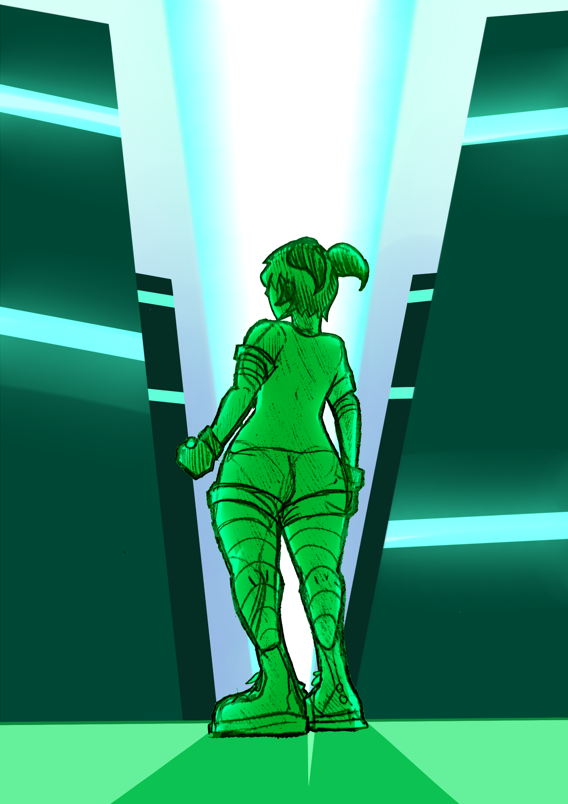

¿DE QUÉ TRATA EL JUEGO?
En un país latino unos años más en el futuro, en su gran capital, NeoSangotia se alza una gran y peligrosa tendencia política de ideales totalitarios, duros y negacionistas. Aquí es donde aparecen los grupos de jóvenes que buscan mostrar su descontento y luchar en contra de este nuevo y poderoso enemigo intangible. Las juventudes de esta nueva época encuentran inspiración en las tendencias de moda, musica y expresión corporal de sus antecesores quienes también defendieron sus derechos en su momento.
// NEO-SANGOTIA

Estetica e idioma visual:
Estética colorida, mega edificios, tecnología y hologramas iluminan las noches de neón en NeoSangotia, mientras que durante el día el grafiti, las banderas y los cometas se apoderan de las calles. Estaciones de metro, grandes pistas de asfalto, barandas, escaleras y rampas escondidas completan el dinamismo de la gran capital. Contrastado con las diferentes partes de la ciudad que se inundan en basura y pobreza.

Locaciones y ambiente:
La ciudad de NeoSangotia es una ciudad futurista, llena de edificios altos y calles de concreto que conectan todo entre sí, hay 3 escenarios principales, los barrios bajos llenos de escombros, caminos en mal estado y pobreza general, la capital que es la ciudad en sí donde se desarrolla la historia con estilo Frutiger Metro y edificios llamativos de estilo moderno y finalmente la torre TASK, una gran edificación fuertemente armada hecha de metal y circuitos brillantes donde es la pelea final con el boss y se cierra la historia.
¿QUIÉNES SON LOS FUNKY KIDS?

Rally
De 16 años era una estudiante de un liceo municipal que fue cerrado por falta de fondos estatales y hoy en dia es quien lidera a los Funky Kids como un movimiento revolucionario y artistico.

WiWi
Autómata cibernetica originalmente creada para reprimir a los jovenes revolucionarios pero que luego de ser derrotada por Rally se cambia de bando.

Racer
Amigo y compañero de Rally, el negocio de su mamá cayó en la quiebra por tarifas y deudas excesivas, por lo que nunca mas va a permitir que se le arrebate nada.
Escaners 3D de los Funky Kids, si los ve avisar inmediatamente a las autoridades.
Inspecciona los assets directamente desde la terminal. Usa el mouse o el dedo para rotar los modelos.